<!doctype html>
<html lang="en">
<head>
<meta charset="utf-8">
<!-- CUSTOMIZE THIS! -->
<title>Einführung in die Digital Humanities</title>
<meta name="author" content="Christof Schöch">
<!-- END -->
<meta name="description" content="Slides">
<meta name="apple-mobile-web-app-capable" content="yes">
<meta name="apple-mobile-web-app-status-bar-style" content="black-translucent">
<meta name="viewport" content="width=device-width, initial-scale=1.0, maximum-scale=1.0, user-scalable=no, minimal-ui">
<link rel="stylesheet" href="css/reveal.css">
<link rel="stylesheet" href="css/theme/simple.css" id="theme">
<!-- Code syntax highlighting -->
<link rel="stylesheet" href="lib/css/zenburn.css">
<!-- Printing and PDF exports -->
<script>
var link = document.createElement( 'link' );
link.rel = 'stylesheet';
link.type = 'text/css';
link.href = window.location.search.match( /print-pdf/gi ) ? 'css/print/pdf.css' : 'css/print/paper.css';
document.getElementsByTagName( 'head' )[0].appendChild( link );
</script>
<!--[if lt IE 9]>
<script src="lib/js/html5shiv.js"></script>
<![endif]-->
</head>


<body>
<div class="reveal">
<div class="slides">
  <section data-markdown="" 
           data-separator="^\n--\n" 
           data-separator-vertical="^\n---\n" 
           data-charset="utf-8" 
           data-background-image="img/basics/uni-trier-mini.png" 
           data-background-size="50px" 
           data-background-position="top right">
<script type="text/template">

# Digitale Edition
<br/>
<br/>
<br/>
<br/>
<br/>
<br/>Vorlesung *Einführung in die Digital Humanities*
<br/>MSc Digital Humanities | Wintersemester 2020/21
<br/>
<br/>Prof. Dr. Christof Schöch
<br/>
<hr/>
<br/>


--
## Überblick
1. "Digital ist besser..."
1. Typen digitaler Editionen
1. Ressourcen


--
## (1) "Digital ist besser..."


---
### Was ist eine Textedition?
* Definition <!-- .element: class="fragment" data-fragment-index="1" -->
  * „Eine Edition ist die erschließende Wiedergabe eines gesicherten Textes.“ (Sahle)
* Ziele <!-- .element: class="fragment" data-fragment-index="2" -->
 * Einen gesicherten und verlässlichen Text vorlegen (bestimmte Fassung, „beste“ Fassung, etc.)
 * Bearbeitungen des Textes offenlegen (Autor:innen: Überarbeitungen; Editor:innen: Textkonstitution, Normalisierung, etc.)
 * Den Text erschließen (Anmerkungen zu Entstehung, Überlieferung, Varianten, Personen und Orten, etc.)


---
### Vorteile einer digitalen Edition?
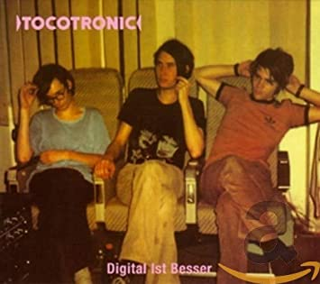


---
### Beispiel: Van Gogh Letters
<a href="http://vangoghletters.org/vg/">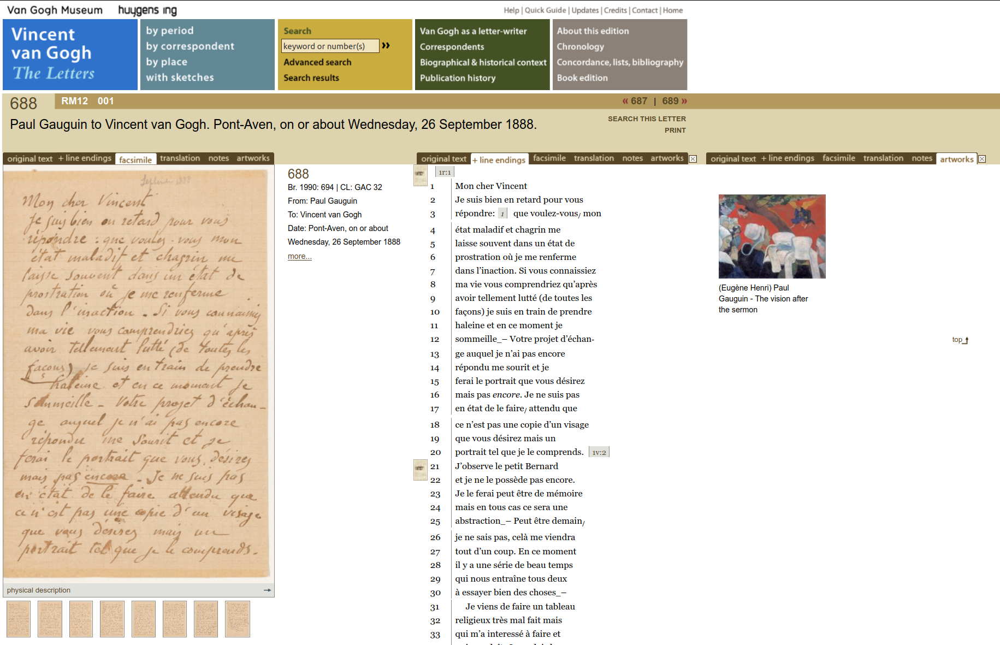</a>
<br/><a href="http://vangoghletters.org/vg/">http://vangoghletters.org/vg/</a>


---
### Einige Vorteile
* Einfache Durchsuchbarkeit <!-- .element: class="fragment" data-fragment-index="1" -->
* Verschiedene Sichten auf die gleichen Daten  <!-- .element: class="fragment" data-fragment-index="2" -->
* Ökonomisch große Datenmengen zusammenführen <!-- .element: class="fragment" data-fragment-index="3" -->
* Keine Platzbegrenzung <!-- .element: class="fragment" data-fragment-index="4" -->
* Multimedialität <!-- .element: class="fragment" data-fragment-index="5" -->
* Dynamisierung / Interaktivität <!-- .element: class="fragment" data-fragment-index="6" -->
* Ortsunabhängigkeit bei der Nutzung <!-- .element: class="fragment" data-fragment-index="7" -->
* „Textdaten“ können weiter verarbeitet werden <!-- .element: class="fragment" data-fragment-index="8" -->
* Vernetzung mit anderen Ressourcen (Normdaten) <!-- .element: class="fragment" data-fragment-index="9" -->


--
## (3) Typen digitaler Editionen


---
### Typen digitaler Editionen
* Faksimile-Ausgabe
* Textarchiv
* Knowledge Site
* Social Edition
* Historisch-Kritische Ausgabe
* Medien-Edition


---
### Faksimile-Ausgabe
* Fokus auf Bildscans und Metadaten
* Kein Volltext, keine Textkonstitution


---
### Faksimile-Ausgabe
<a href="img/E08/subgoe-pdf.png">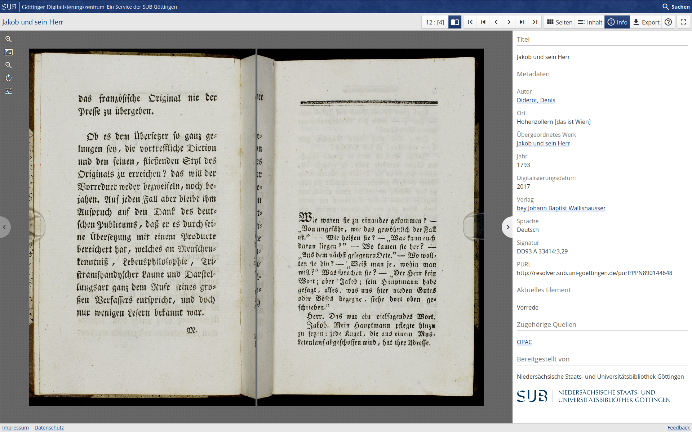</a>
<br/>Beispiel: <a href="https://gdz.sub.uni-goettingen.de/">Digitalisierungszentrum der SUB Göttingen</a>


---
### Textarchiv
* Große Menge an Volltexten
* Mit Metadaten
* Aber wenig Erschließung / Textkonstitution
* Lesetexte / Studienausgaben


---
### Textarchiv (1)
<a href="img/E08/textgridrep.png">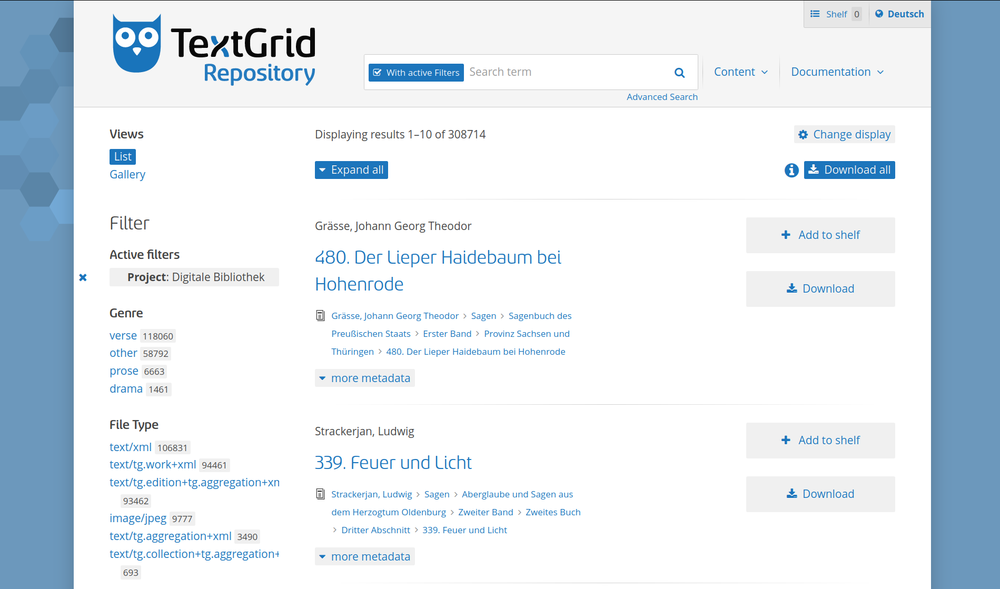</a>
<br/>Beispiel: <a href="https://textgridrep.org/">TextGrid Repository</a>


---
### Textarchiv (2)
<a href="img/E08/eltec.png">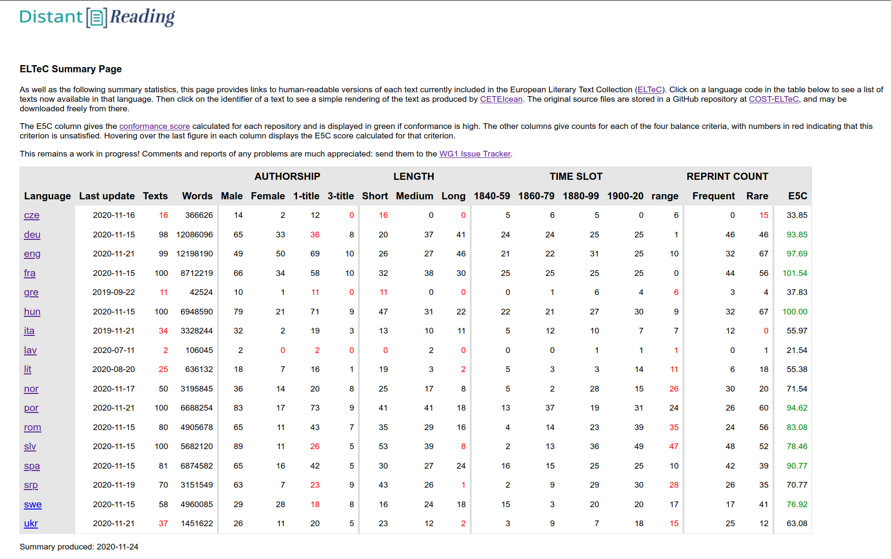</a>
<br/>Beispiel: <a href="https://distantreading.github.io/ELTeC/">European Literary Text Collection</a>


---
### Knowledge Site / Archiv
* Ähnlich wie Textarchive
* Manchmal auf eine Persönlichkeit fokussiert
* Aber breiter Fokus bzgl. Materialien und Medien

---
### Knowledge Site / Archiv (1)
<a href="img/E08/buechner.png">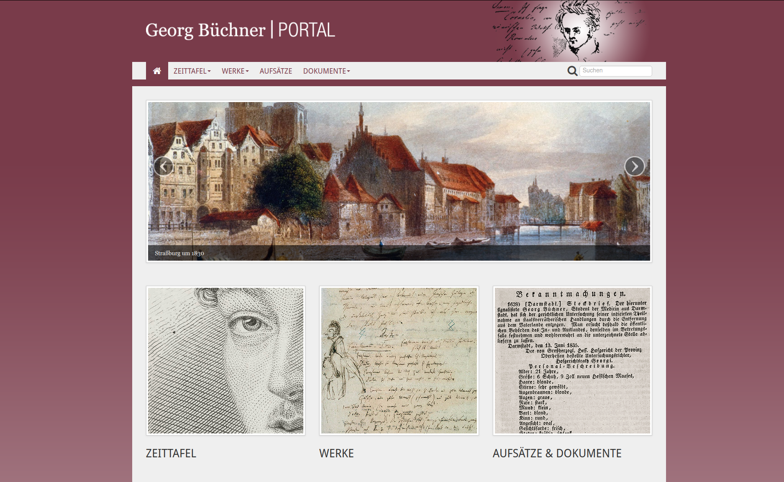</a>
<br/>Beispiel: <a href="http://buechnerportal.de/">Georg Büchner Portal</a>


---
### Knowledge Site / Archiv (2)
<a href="img/E08/blake1.png">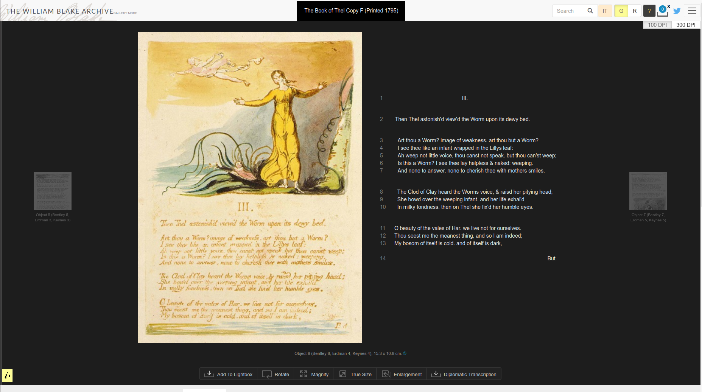</a>
<br/>Beispiel: <a href="http://www.blakearchive.org/">William Blake Archive</a>


---
### Historisch-Kritische Edition
* Höchster Anspruch an die Textkonstitution
* Aufwändige, viel-schichtige Erschließung
* Oft auf ein Autor:innen-Werk fokussiert
* Sehr ressourcen-intensiv


---
### Historisch-Kritische Edition (1)
<a href="img/E08/schnitzler-else.png">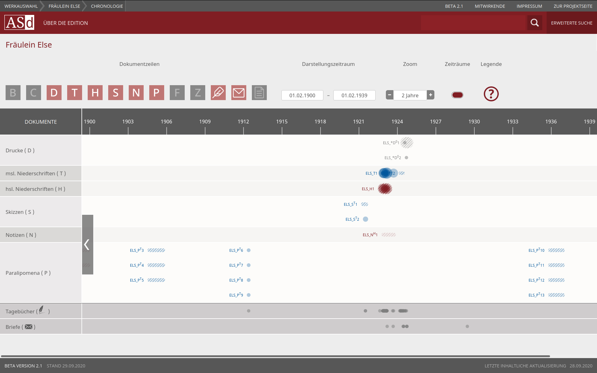</a>
<br/>Beispiel: <a href="https://www.schnitzler-edition.net">Arthur-Schnitzler-Edition</a>


---
### Historisch-Kritische Edition (2)
<a href="img/E08/faustedition.jpg">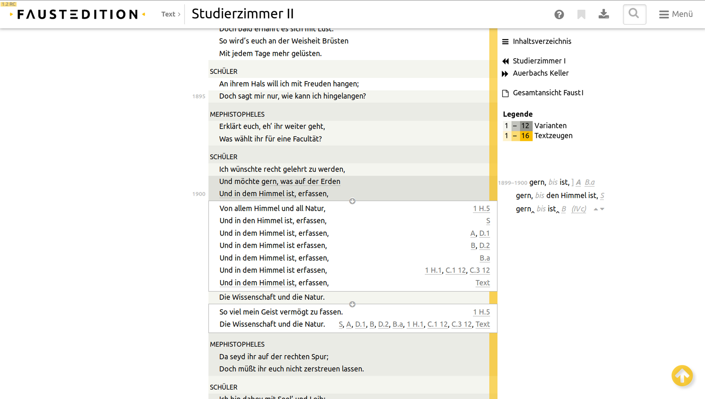</a>
<br/>Beispiel: <a href="http://faustedition.net/">Faustedition (Würzburg u.a.)</a>


---
### Social Edition
* Fokus auf die kollaborative Wissensproduktion
* Oft mit Crowdsourcing / Citizen Science (Transkription)

---
### Social Edition (1)
<a href="img/E08/transcribe-bentham.png">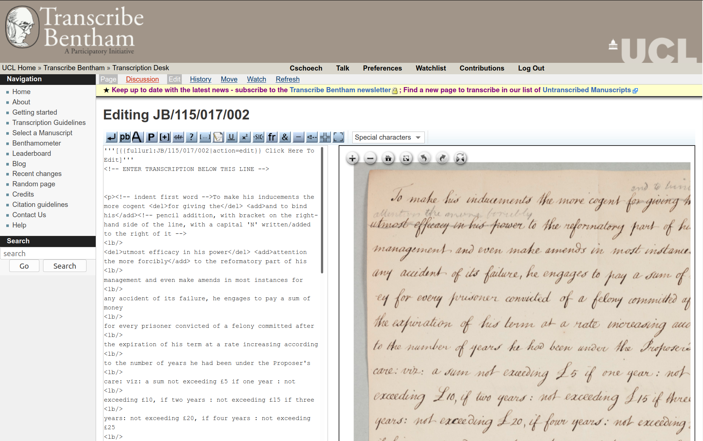</a>
<br/>Beispiel: <a href="http://transcribe-bentham.ucl.ac.uk/">Transcribe Bentham</a>


---
### Social Edition (2)
<a href="img/E08/devonshire-ms.png">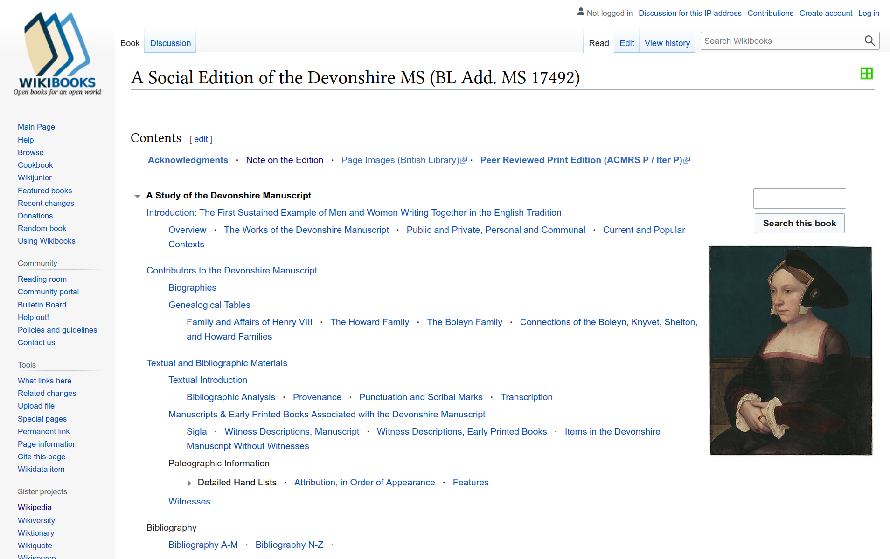</a>
<br/>Beispiel: <a href="https://en.wikibooks.org/wiki/The_Devonshire_Manuscript">A Social Edition of the Devonshire MS</a>


---
### Medien-Edition
* Digitale Edition jenseits von Text
* Bspw.: Computerspiele, Werbematerial, Tonträger, Filme, uvm.

---
### Medien-Edition
<a href="img/E08/elaterna.png">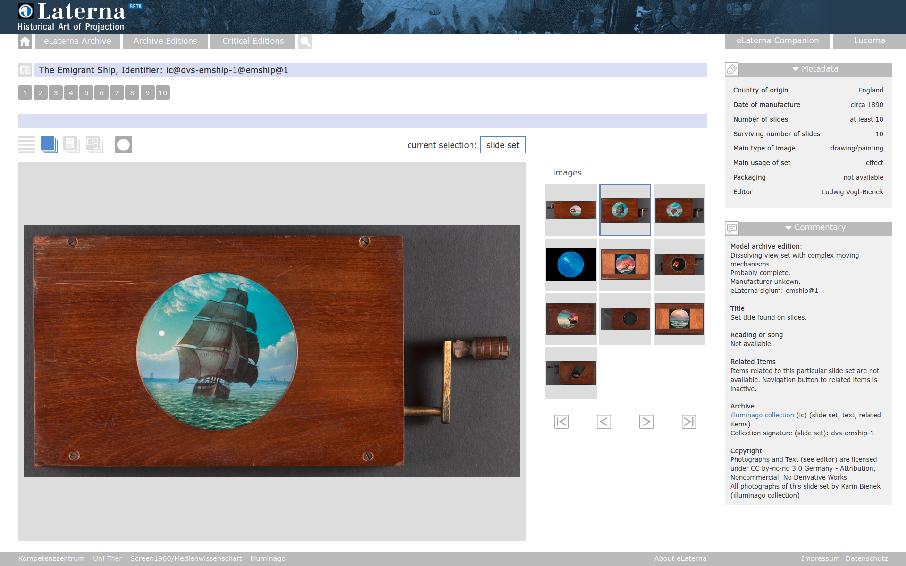</a>
<br/>Beispiel: <a href="https://elaterna.uni-trier.de/#/ea">eLaterna</a>


--
## Ressourcen

---
### Reference Model
<a href="img/E08/reference-model.png">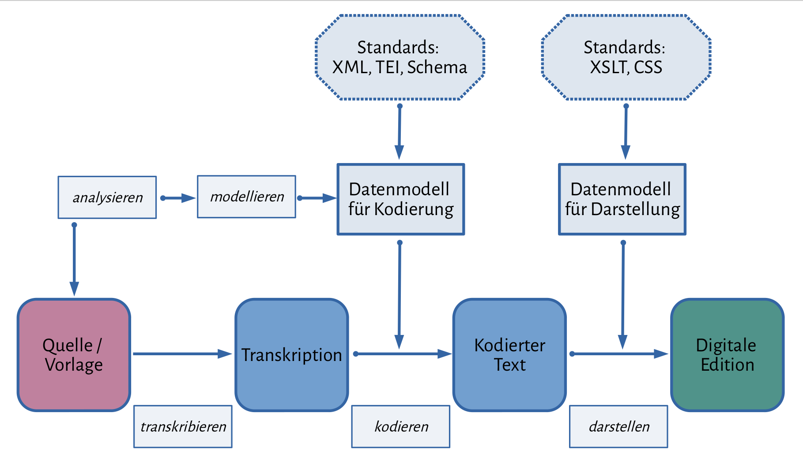</a>
<br/><small>(Nach: Rehbein und Fritze 2015.)</small>


---
### Kataloge Digitaler Editionen
* Catalogue of Scholarly Digital Editions
  * Patrick Sahle (Köln, IDE)
  * http://www.digitale-edition.de/<br/><br/>
* Catalogue of Digital Editions
  * Greta Franzini (UCL/Leipzig)
  * https://dig-ed-cat.acdh.oeaw.ac.at/


--
## Abschluss


---
### Lektürehinweise
<small>

**Referenzlektüre**
* Patrick Sahle. "Digitale Edition". *Digital Humanities: Eine Einführung*. Stuttgart: Metzler, 2017, S. 234-248.
* Schreibman, Susan. "Digital Scholarly Editing", in: *Literary Studies in the Digital Age*, ed. Kenneth M. Price and Ray Siemens. MLA, 2014. http://dlsanthology.commons.mla.org/digital-scholarly-editing/.

**Weitere Empfehlungen**
* Shillingsburg, Peter. *From Gutenberg to Google. Electronic Representations of Literary Texts*. Cambridge: Cambridge Univ. Press, 2006.ca 2006.
* Malte Rehbein and Christian Fritze: "Hands-On Teaching Digital Humanities: A Didactic Analysis of a Summer School Course on Digital Editing", in: *Digital Humanities Pedagogy*, ed. Brett D. Hirsch, 2015. https://books.openedition.org/obp/1617

</small>


---
<br/>
<br/>
<br/>
<br/>
<br/>Christof Schöch, 2020
<br/>http://www.christof-schoech.de
<br/>
<hr/>
Lizenz: [Creative Commons Attribution 4.0](https://creativecommons.org/licenses/by/4.0/)
<br/>


</script>

<!-- DON'T TOUCH UNLESS YOU KNOW WHAT YOU'RE DOING :-) -->
</div>
<script src="lib/js/head.min.js"></script>
<script src="js/reveal.js"></script>
<script>
// Full list of configuration options available at:
// https://github.com/hakimel/reveal.js#configuration
Reveal.initialize({
    controls: true,
    progress: true,
    history: true,
    center: false,
    transition: 'slide', // none/fade/slide/convex/concave/zoom
    // Optional reveal.js plugins
    dependencies: [
        { src: 'lib/js/classList.js', condition: function() { return !document.body.classList; } },
        { src: 'plugin/markdown/marked.js', condition: function() { return !!document.querySelector( '[data-markdown]' ); } },
        { src: 'plugin/markdown/markdown.js', condition: function() { return !!document.querySelector( '[data-markdown]' ); } },
        { src: 'plugin/highlight/highlight.js', async: true, callback: function() { hljs.initHighlightingOnLoad(); } },
        { src: 'plugin/zoom-js/zoom.js', async: true },
        { src: 'plugin/notes/notes.js', async: true }
        ]
    });
Reveal.configure({ slideNumber: true });
</script>
</body>
</html>
